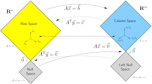

(한국어 위키백과 출처) 선형대수학(linear algebra)은 벡터 공간, 벡터, 선형 변환, 행렬, 연립 선형 방정식 등을 연구하는 대수학의 한 분야이다. 선형대수학은 자연과학과 공학에도 널리 활용된다. 선형 연립방정식을 푸는 좋은 방법으로는 소거법과 행렬식이 있다.
(영어 위키백과 출처) Linear algebra is central to almost all areas of mathematics. For instance, linear algebra is fundamental in modern presentations of geometry, including for defining basic objects such as lines, planes and rotations. Also, functional analysis may be basically viewed as the application of linear algebra to spaces of functions. Linear algebra is also used in most sciences and engineering areas, because it allows modeling many natural phenomena, and efficiently computing with such models. For nonlinear systems, which cannot be modeled with linear algebra, linear algebra is often used as a first approximation.
